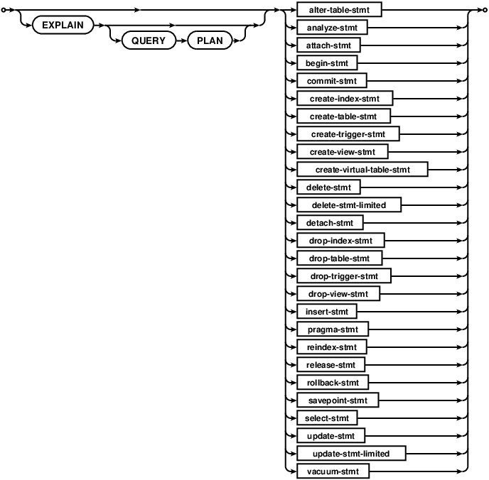

Small. Fast. Reliable.
Choose any three.
Home
Menu
About
Documentation
Download
License
Support
Purchase
Search
About
Documentation
Download
Support
Purchase
Search Documentation
Search Changelog
sql-stmt

Used by:
sql-stmt-list
References:
alter-table-stmt
analyze-stmt
attach-stmt
begin-stmt
commit-stmt
create-index-stmt
create-table-stmt
create-trigger-stmt
create-view-stmt
create-virtual-table-stmt
delete-stmt
delete-stmt-limited
detach-stmt
drop-index-stmt
drop-table-stmt
drop-trigger-stmt
drop-view-stmt
insert-stmt
pragma-stmt
reindex-stmt
release-stmt
rollback-stmt
savepoint-stmt
select-stmt
update-stmt
update-stmt-limited
vacuum-stmt
See also:
lang.html
lang_explain.html